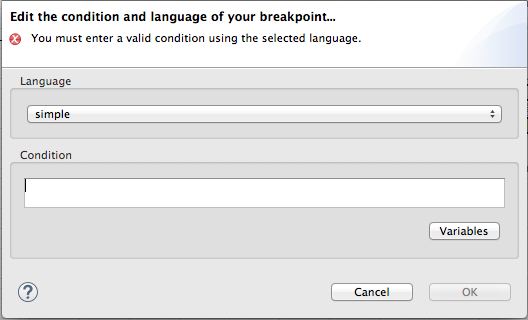
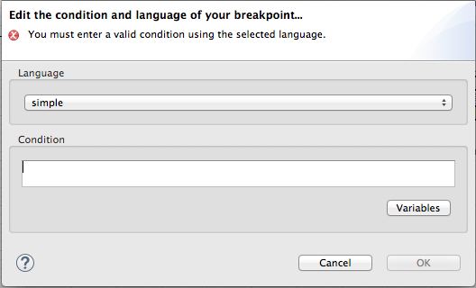
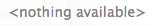

To set breakpoints, your project's routing context .xml file must
be open in the route editor's Design View.
The Camel debugger supports two types of breakpoints:
Unconditional breakpoints—triggered whenever one is encountered during a debugging session
Conditional breakpoints—triggered only when the breakpoint's specified condition is met during a debugging session
![[Note]](imagesdb/note.png) | Note |
|---|---|
You cannot set breakpoints on Consumer endpoints or on When or Otherwise nodes. |
With your routing context displayed on the canvas in Design View:
With your routing context displayed on the canvas in Design View:
Select a node whose state you want to examine during the debugging session.
Click its
 icon to set a conditional breakpoint and to open the
Edit the condition and language of your breakpoint...
dialog:
icon to set a conditional breakpoint and to open the
Edit the condition and language of your breakpoint...
dialog:Click the Language drop-down menu and select the expression langauge to use to create the condition that will trigger the breakpoint.
Fuse Tooling supports twenty-four expression languages from which to choose. Some of these languages provide variables for creating conditional expressions, while others do not.
Click the Variables button to access a list of the selected language's supported variables.
If a list appears, select in sequence one or more of the variables to create the condition for triggering the breakpoint. The variables you select appear in the Condition text box.
If  appears, enter the expression directly into the Condition text box.
Repeat steps Step 1 through Step 4 for each node on which you want to set a conditional breakpoint.
You can temporarily disable a breakpoint, leaving it in place, then enable it again
later. The  button skips over disabled breakpoints during debugging
sessions.
button skips over disabled breakpoints during debugging
sessions.
To disable a breakpoint, select the node on the canvas and click its  icon. The breakpoint turns gray, indicating it has been
disabled.
icon. The breakpoint turns gray, indicating it has been
disabled.
To enable a disabled breakpoint, select the node on the canvas and click its  icon. Depending on whether the disabled breakpoint is conditional
or unconditional, it turns yellow or red, respectively, to indicate it has been
re-enabled.
icon. Depending on whether the disabled breakpoint is conditional
or unconditional, it turns yellow or red, respectively, to indicate it has been
re-enabled.
| Note |
|---|---|
You can also disable and re-enable breakpoints during debugging sessions. For details, see Disabling Breakpoints in a Running Context. |
You can delete individual breakpoints or all breakpoints.
Individual breakpoints—in a route container, select the node whose breakpoint you want to delete, and click its
 icon.
icon.All breakpoints in a particular route—right-click the target route's container, and select
 Delete all breakpoints.
Delete all breakpoints.All breakpoints in all routes—right-click the canvas, and select
Delete all breakpoints.